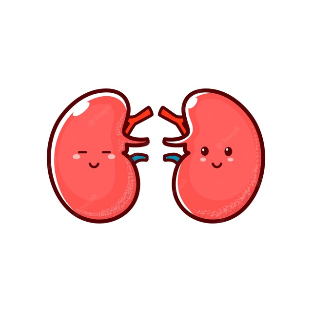
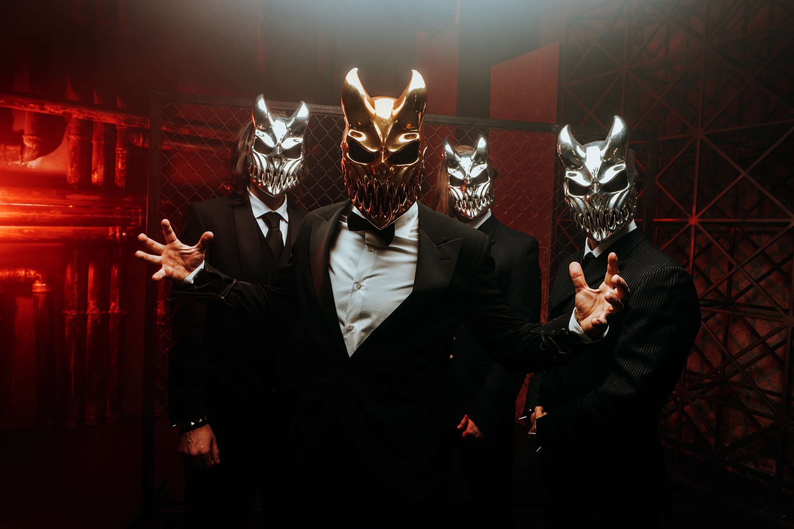

About Me

I would like to travel more. My dog is my child. I am fluent in Korean. I am a radiation therapist working as a diagnostic x-ray tech. I am the person that makes sure someone's dialysis access sites are working properly, so that when they are on dialysis, it runs smoothly. I ride motorcycles! I have a Yamaha R3, the 60th anniversary GP edition. I used to have a Kawasaki Z400, but wrecked it in the mountains in May.
Work Apps
App 1

My dog, Ahsoka. She is a Korean Jindo. Boop the snoot to learn about Korean Jindo Dogs!
App 2
Kidneys to represent my job working with dialysis patients. Click on a kidney to learn more!
App 3
My favorite death metal band: Slaughter to Prevail. Here they are with kid of darkness masks. Click the pic to learn or listen!🤘
App 4

Some cool stuff here...like my motorcycle! Click on the bike to see specs!😎
App 5

I love to read. My favorite fantasy series is Sarah J. Maas's A Court of Thorns and Roses. Click the meme to learn more!📚